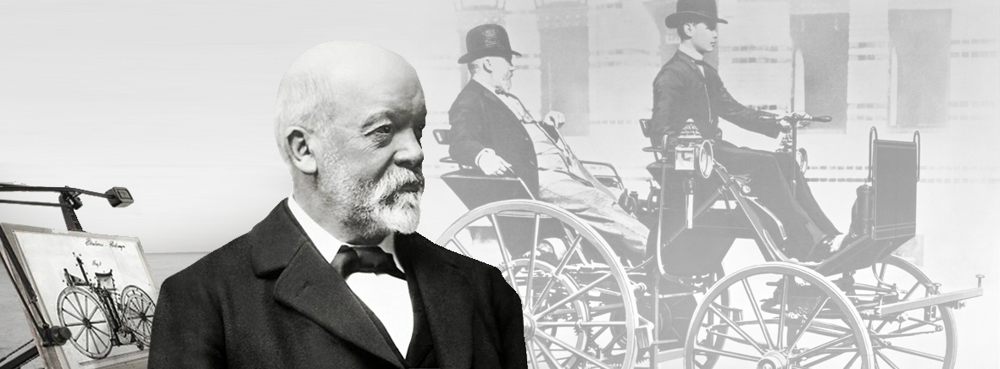
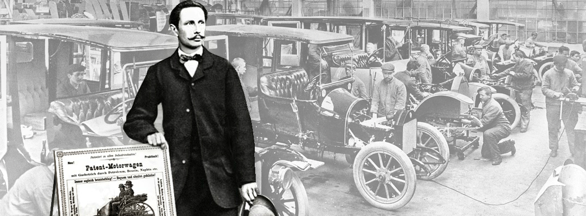

'It’s not the idea, it’s the implementation that counts.' Gottlieb Daimler is born on 17 March 1834 in Schorndorf. After training as a gunsmith and working in France, he attends the Polytechnic School in Stuttgart from 1857 to 1859. After completing various technical activities in France and England, he starts work as a draftsman in Geislingen in 1862. At the end of 1863, he is appointed workshop inspector in a machine tool factory in Reutlingen, where he meets Wilhelm Maybach in 1865. In 1872, he becomes Technical Director of the gas engine manufacturer Deutz Gasmotorenfabrik, where he becomes familiar with Otto’s four-stroke technology. After differences with the Managing Director, he leaves the company in 1882. Daimler sets up a development workshop in his greenhouse at his Cannstatt villa to concentrate on developing petrol-driven four-stroke engines. Working with Wilhelm Maybach in 1884, he develops an internal combustion engine known today as the 'Grandfather Clock'. With its compact, low-weight design, the machine forms the basis for installation in a vehicle. The costs of trial operations soon consume Daimler’s entire fortune, however, so he is obliged to find business partners. He founds 'Daimler-Motoren-Gesellschaft' on 28 November 1890 together with Max Duttenhofer and his business partner Wilhelm Lorenz. But while Duttenhofer wants to produce stationary engines, Daimler prefers to focus on vehicle production, and a dispute ensues.
'It’s not the idea, it’s the implementation that counts.' Gottlieb Daimler is born on 17 March 1834 in Schorndorf. After training as a gunsmith and working in France, he attends the Polytechnic School in Stuttgart from 1857 to 1859. After completing various technical activities in France and England, he starts work as a draftsman in Geislingen in 1862. At the end of 1863, he is appointed workshop inspector in a machine tool factory in Reutlingen, where he meets Wilhelm Maybach in 1865. In 1872, he becomes Technical Director of the gas engine manufacturer Deutz Gasmotorenfabrik, where he becomes familiar with Otto’s four-stroke technology. After differences with the Managing Director, he leaves the company in 1882. Daimler sets up a development workshop in his greenhouse at his Cannstatt villa to concentrate on developing petrol-driven four-stroke engines. Working with Wilhelm Maybach in 1884, he develops an internal combustion engine known today as the 'Grandfather Clock'. With its compact, low-weight design, the machine forms the basis for installation in a vehicle. The costs of trial operations soon consume Daimler’s entire fortune, however, so he is obliged to find business partners. He founds 'Daimler-Motoren-Gesellschaft' on 28 November 1890 together with Max Duttenhofer and his business partner Wilhelm Lorenz. But while Duttenhofer wants to produce stationary engines, Daimler prefers to focus on vehicle production, and a dispute ensues.
'Love of invention will never die' Carl Benz is born in Karlsruhe on 25 November 1844. His father dies in July 1846. Despite living on limited financial means, his mother ensures that her son attends a grammar school and later studies mechanical engineering. The young engineer advances quickly from a locksmith to a designer and workshop foreman. In 1871, Carl Benz joins forces with 'mechanician' August Ritter to found his first company, 'Carl Benz and August Ritter, Engineering Workshop', in Mannheim. When Ritter emerges as an unreliable partner, Carl Benz is forced to pay him off using the dowry of his wife, Bertha Ringer, and runs the company alone. From 1878, Carl Benz works intensively on a gas-driven two-stroke engine to realise his vision of a 'vehicle without horses'. After long and laborious attempts, he gets the engine running for the first time on New Year’s Eve in 1879. He founds the 'Gasmotorenfabrik Mannheim' (Mannheim Gas Engine Factory) as a shareholding company in October 1882. Benz’s share in the company amounts to a mere 5 per cent, however, and he has only limited influence in technical areas. His backers are primarily concerned with the safe business of stationary gas engines.
Benz leaves the company in January 1883 and joins forces with new business partners Max Rose and Friedrich Wilhelm Esslinger. They found the company 'Benz and Cie. Rheinische Gasmotoren-Fabrik Mannheim' (Benz and Co. Rhine Gas Engine Factory Mannheim' and launch the two-stroke 'System Benz' engine. While Benz strives to implement his automotive vision, his business partners Rose and Esslinger are sceptical of the outcome. Carl Benz is once again faced with finding new investors. Julius Ganss and Friedrich von Fischer replace Rose and Esslinger in May 1890. The combined business model of producing stationary and vehicle engines is a success. But Benz wanted to focus exclusively on vehicles and starts the company 'Carl Benz Söhne' (Carl Benz and Sons) in Ladenburg in 1906. In 1912, Carl Benz resigns as Managing Director and transfers sole management control to his sons. He witnesses the rise of motorisation and the implementation of his ideas. On his 80th birthday, the 'once ridiculed and misunderstood inventor,' as he has been seen in the past, enjoys plaudits from around the world. In his last years (1926 to 1929), Carl Benz remains active as a Board Member of the new Daimler-Benz AG company. The automobile pioneer dies at his home in Ladenburg on 4 April 1929.
The king of designers Wilhelm Maybach is born in Heilbronn on 9 February 1846 as the son of a master joiner. Orphaned at ten years old following the death of both parents within three years of each another, Wilhelm is adopted into the Reutlinger Bruderhaus in 1856 after friends of the family print an announcement in the 'Stuttgarter Anzeiger' newspaper. It is during his schooling at the Bruderhaus that Wilhelm Maybach first becomes acquainted with Gottlieb Daimler whilst working in the machine shop in 1864. Their close relationship will endure throughout their lives. Wilhelm Maybach initially follows Daimler to Karlsruhe and then in 1872 to the engine manufacturer Deutz. Following a brief stint employed as a draughtsman, he is appointed head designer in January 1873. When Gottlieb Daimler leaves the Deutz Gasmotorenfabrik following internal wranglings, Wilhelm Maybach joins his friend in Cannstatt in October 1882. Here they collaborate in the development of a lightweight, high-speed combustion engine. Daimler-Motoren-Gesellschaft (DMG) is founded in November 1890 by Daimler and two business partners, Max Duttenhofer and Wilhelm Lorenz. Although Wilhelm Maybach was in line to assume the position of head designer, he is unhappy with contractual terms and leaves DMG in February 1891. What follows is a remarkable temporary solution. Secretly funded by Daimler, Maybach continues to improve his mobility concept.
Working with a small team in the Hotel Hermann in Cannstatt, he develops significant design concepts, including the belt drive, the Phoenix engine and the spray nozzle carburettor – inspirations that are used in the automobile industry for decades to come. Gottlieb Daimler and Wilhelm Maybach are reinstated at DMG in November 1895 at the behest of English industrialist Frederick Simms, who negotiates a substantial licensing business with the company. Maybach’s primary objective is to re-establish DMG’s competitive capacity through technical innovation and reliable products. Extensive development work is implemented to advance the concepts devised in the Hotel Hermann to series production status. The most significant outcome is the belt-driven car, the first automobile to be produced by DMG in considerable quantity. Following the death of Max von Duttenhofer in August 1903, Maybach’s standing within the company gradually deteriorates, leading to his eventual resignation from DMG in April 1907. Embittered by his treatment, Maybach goes into business with his sons constructing the now legendary vehicles bearing his own name. Wilhelm Maybach dies in Cannstatt on 29 December 1929 at the age of 83.
This is where the automobile pioneer is also buried – close to the grave of Gottlieb Daimler at the Uff-Kirchhof cemetery.
Test workshop in Stuttgart-Cannstatt After leaving the gas engine works following a dispute with management in 1882, Gottlieb Daimler purchases a villa in Cannstatt (Taubenheimstrasse). He immediately sets about upgrading the greenhouse on the property by adding an extension to create his own testing workshop. The refuge in the Taubenheimstrasse is an ideal retreat for the close-knit partnership of Daimler and Maybach to continue their research. Daimler’s vision was to focus on petrol as the fuel used in engines being built into all conceivable types of vehicle – whether for land, sea or air operation. The crucial technology that provides the solution is discovered by Maybach after poring over extensive research carried out by an Englishman named Watson in one of his patents. The patent suggests the possibility of using an unregulated hot-tube ignition system, an essential prerequisite for attaining higher speeds without needing lighter, more powerful engines. The first design developed in the Cannstatt testing workshop by the two engineers is an “engine featuring unregulated hot-tube ignition system” based on the four-stroke principle pioneered by Otto, and subsequently patented by Daimler (DRP 28022).
By the end of 1883, the first (still horizontal) high-speed test engine is up and running. Delivering an engine speed of 600 rpm, this engine easily surpasses the maximum speed limit of 120–180 rpm produced by previous engines. Using this 'small model engine' as a basic concept, Daimler and Maybach go on to develop the renowned Daimler single-cylinder engine, referred to today as the 'Grandfather Clock', which was a key milestone in the history of automotive production.
The first steps Benz and Co. Rheinische Gasmotoren-Fabrik (renamed Benz and Cie. in 1899) is founded in Mannheim by Carl Benz in October 1883 in collaboration with businessman Max Kaspar Rose and sales representative Friedrich Wilhelm Esslinger. Proving an immediate success, the company workforce increases rapidly to 25 employees. The newly established business even grants licenses for building gas engines. Due to a growing demand for stationary engines, Benz and Co. Rheinische Gasmotoren-Fabrik is compelled to relocate to more spacious factory premises. While Carl Benz is working vigorously on the development of a car engine, his business partners Rose and Esslinger are becoming increasingly sceptical of the future prospects for Benz’s brainchild. They are replaced in May 1890 by Julius Ganss and Friedrich von Fischer. On his departure, Rose even leaves Benz with the well-intended snippet of advice: “Don’t waste your time on motor cars.” The appointment of the new partners sees Rheinischen Gasmotoren-Fabrik Benz and Cie. evolve to become the second-largest engine manufacturer in Germany, and the world’s leading producer of automobiles up to the turn of the century. The economic breakthrough comes with the four-wheeled motorised Velocipede – commonly known as the “Velo” – which is produced between 1894 and 1901.
Lightweight and reasonably priced, this two-seater car is considered the first mass-produced automobile, with a production count of around 1200 units. In 1897, Benz developed the 'contra' engine, the forerunner to today’s boxer engines. This allows the company to satisfy the increasing demand for vehicles featuring higher engine outputs. Between 1890 and 1899, the workforce increases from 50 employees to 430. A total of 572 vehicles are produced by Benz in the financial year 1899, rising to 603 in the following year.
The first contemporary automobile Working together in the Cannstatt district of Stuttgart, Gottlieb Daimler and Wilhelm Maybach are faced with a considerable challenge: To develop a high-performance engine capable of driving a vehicle. Due to their weight and size, the “drive machines” available at the time are unsuitable for installation in a motor carriage. The two engineers would have to develop miniature versions of existing designs to produce a drive concept in line with Daimler’s plans. A light, compact design are key factors in this process. On this basis, Daimler and Maybach build a test engine with a vertical cylinder, which is christened the “Grandfather Clock” due to its appearance. The output of the 1884 design is around 1 hp (0.8 kW) with an engine speed of 600 rpm. The compact, weight-saving construction makes it ideal for installation in vehicles. It is subsequently used in the Daimler Reitwagen (“Riding Car”) and the motor carriage. This design paves the way for Daimler and Maybach to install an engine in a motor vehicle.
The world’s first motorcycle Based on the Grandfather Clock template, Gottlieb Daimler and Wilhelm Maybach build a smaller single-cylinder engine. The first test object is a bicycle-inspired “carriage” with a strengthened wooden frame. It becomes known as the “Daimler Reitwagen” (“Riding Car”). Installing the engine vertically in the wooden frame, Gottlieb Daimler essentially invents the motorcycle. On 28 August 1885, Daimler is awarded Patent specification DRP 36423 for the “vehicle with gas or petroleum drive machine”.
The world’s first automobile The financial success of his gas engine factory secures Benz an economic basis, enabling him to devote himself to his vision of an engine-driven vehicle. But since his two-stroke engine is too large and too heavy to be installed in a vehicle, Benz puts all his efforts into the four-stroke principle. Just like Gottlieb Daimler and Wilhelm Maybach, he has to find a way to increase engine speed. And, just like the Cannstatt engineers, he focuses on ignition and valve control. Although his engine reaches a speed of “only” 400 rpm and is therefore less efficient than Daimler’s design, it already provides the necessary power to drive a “vehicle without horses”. Carl Benz demonstrates the full extent of his talents in developing the vehicle. Instead of installing his engine in an existing vehicle, he designs his motor car as an integrated independent construction. The primary assembly is the engine with a horizontal cylinder and large, horizontally mounted flywheel. Benz designs his innovative vehicle with three wheels because he is unhappy with the single-pivot steering used in carriages at the time. Testing begins in October 1885. On 29 January 1886, he takes a step of historical significance when he submits a patent application for his “vehicle with gas engine operation” to the Imperial Patent Office. The patent specification for DRP 37435 is recognised today as the “birth certificate” of the automobile and bears the name “Patent-Motorwagen” (“Patent Motor Car”) for the world’s first automobile.
The maiden long-distance journey Bertha and Carl Benz marry on 20 July 1872. Benz later writes in his memoirs: “With this step, an idealist is at my side who knows what she wants, from the small and narrow to the grand, clear and vast.” Supporting all her husband’s activities and sharing his pioneering spirit, Bertha Benz turns out to be a key factor in the success of Carl Benz. She is the first person to undertake a long-distance journey with a petrol-driven automobile. To demonstrate the everyday suitability of the motor car in practice, she drives with her sons Eugen (15) and Richard (14) the 100 km distance from Mannheim to Pforzheim to visit her mother. Her vehicle is the third version of the “Patent Motor Car”, equipped with solid wood spoked wheels and a more powerful engine. Starting at daybreak and following an adventurous drive that requires considerable improvisational talent from Mrs. Benz and her sons on numerous occasions, the travellers arrive in Pforzheim. The return drive five days later leads through Bretten, Bruchsal and Schwetzingen back to Mannheim. The word of this sensation gets out in no time and Bertha Benz has achieved her goal. The critics now knew of the vehicle’s reliability and the Benz Patent Motor Car was the talk of the town.
The first omnibus with petrol engine The age of the motorized motor coach dawns on 18 March 1895. The world’s first motor coach, ordered on 19 December 1894 from Benz and Co. in Mannheim, begins a scheduled bus service on the route Siegen–Netphen–Deuz. Due to poor weather and technical problems, the bus service is stopped as early as December 1895. The Daimler omnibus experiences the same fate on the Künzelsau–Mergentheim route. Despite these setbacks, DMG has a wide selection of motor coaches in its sales range to satisfy the increasing demand for motorised omnibuses starting in 1905.
The world’s first truck The first truck built by the Daimler-Motoren-Gesellschaft is delivered to the British Motor Syndicate, Ltd. in London on 1 October 1896. The world’s first truck is equipped with a 2-cylinder “Phoenix” engine built into the rear end. It develops 4 hp and is designed for a cargo load capacity of 1500 kg. Unlike England, motorised commercial vehicles are initially not in high demand in Germany. This changes in 1906, however, when the Prussian and Bavarian army administrations begin to subsidise trucks suitable for war – leading to a sharp increase in demand.
The first contemporary automobile Due to his premature death, Gottlieb Daimler does not witness one of the most outstanding designs Maybach produced for the joint company. The first Mercedes generates great excitement at the “Nice Race Week” in March 1901. It is a powerful, lightweight vehicle with a low centre of gravity and stands out from all previously built cars. The 35 hp Mercedes is an independent automobile design. It signals the end for the carriages used in automobile manufacturing. The development of this pioneering design, which is considered to the first modern automobile, is not only attributed to the genius of Wilhelm Maybach, but also to the initiative of Emil Jellinek.
The businessman and automobile enthusiast, who has domiciles in Baden near Vienna and Nice, buys his first Daimler car in 1897 and from then on demands more powerful and faster vehicles from Maybach and DMG. With spectacular racing victories and impressive sales success, Mercedes vehicles usher in a new era.
From September 1902 DMG holds the patent for successful “Mercedes” brand name. All that is missing is a characteristic trademark. That’s when the sons of Gottlieb Daimler, Paul and Adolf, remember, that their father previously used a star for a symbol. The DMG Board of Management follows this inspiration and in June 1909 registers both a three-pointed and four-pointed star as trademarks. Both logos are legally protected but it is the three-pointed star that is ultimately used and a three-dimensional star adorns the front radiator of vehicles from 1910 onwards. With the merging of both companies in June 1926, a new brand name is created, which combines the essential elements of the previous emblems.
The world-famous three-pointed star of the Daimler-Motoren-Gesellschaft is framed with the brand name 'Mercedes' as well as with the celebrated brand name 'Benz' – both words connected with a laurel wreath.
The merger The period after World War I is badly affected by inflation and poor sales figures – especially for luxury goods such as passenger cars. Only strong brands marketed by financially stable companies are able to survive. Businesses are often forced into mergers or partnerships. Competitors for many years, DMG and Benz and Cie. enter into a joint venture in May 1924. They focus on remaining competitive through coordinated designs, production techniques, purchasing strategies, sales and advertising. The joint marketing activities of the “Mercedes” and “Benz” brands are initially handled by the newly founded “Mercedes-Benz Automobil GmbH”. The fusion of the two oldest automotive manufacturers in the world takes place in June 1926 when Daimler-Benz AG is established. The new company presents the first Daimler-Benz product range as early as October at the 1926 Berlin Motor Show. The exhibition sees the unveiling of the first jointly developed passenger car models launched under the new Mercedes-Benz brand name: The 8/38 hp two-litre car (W 02) and the 12/55 hp three-litre model (W 03).
The model 'K' is also on display. Based on the 12/100/140 hp vehicle, this special model features a shorter wheelbase and is the fastest touring car in the world. It is added to the standard sales range in April 1927. The new models bear the new trademark – the Mercedes Star. The three-pointed star graces Mercedes-Benz vehicles to this day. It has become a global symbol of quality and safety. And the Mercedes-Benz name is universally associated with tradition, innovation – and the future of the motor car.


 <
<